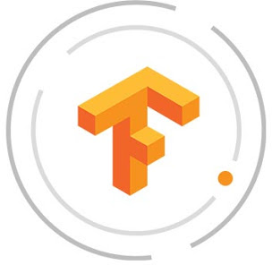

|
Roshan Rajan
I am a rising senior studying Computer Engineering at University of Illinois. My current interests range from Distributed Systems and Blockchain to Software Application Development.
Currently at Amazon on the AWS EC2 Foundational Technologies team where I am working on developing an in-house application to be used during the EC2 deployment process. My other experiences touches on deveopment in Low-Level Systems to Machine Learning modeling. You can read more details on my Linkedin profile and my resume.
|
|
|
Software Development Engineer Intern, AWS EC2 Foundational Technologies
May 2018-August 2018 in Seattle, WA.
Collaborating with team to develop a serverless internal tool for monitoring platform deployment using AWS Lambda, S3 and API Gateway.
|
|
Software Engineer Intern, Trustwave Big Data Team
January 2018-May 2018 in Chicago, IL.
- Proof of Concept for data storage in Neo4j Graph Database vs ElasticSearch
- Utilized Read-only Rest to finetune ACL for data in ElasticSearch and Kibana
- Used Apache NiFi and Oozie for controlling data injestion
|
|
Engineering Intern, Northrop Grumman Embedded Firmware Team
May 2016 - August 2016 and December 2016 - January 2017 in Rolling Meadows, IL.
- Proof of Concept for data storage in Neo4j Graph Database vs ElasticSearch
- Read-only Rest to work on ACL for access to data in ElasticSearch and Kibana
- Used Apache NiFi and Oozie for controlling data injestion
|
|  |
Research Intern, NCSA SPIN
June 2017-August 2017 in Champaign, IL
- Worked on setting up Tensorflow deep learning objects on PYNQ FPGA board
- Automated model development process using Python and Bash scripts
- Overcame resource limitations of FPGA to enable deep learning modeling
|
|
Research Intern, NCSA BDEEP
May 2017-August 2017 in Champaign, IL
- Worked on setting up Tensorflow deep learning objects on PYNQ FPGA board
- Automated model development process using Python and Bash scripts
- Overcame resource limitations of FPGA to enable deep learning modeling
|
|
Research Intern, PURE
January 2016 - May 2016 in Champaign, IL
- Designed a multi-layered protocol to secure database for existing web applications
- Prototyped a working cryptographic protocol on Wordpress with full user capabilities
|
|
Computer Engineering
August 2015-December 2018 in Urbana, IL.
Courses: Data Structures & Algorithms, Distributed Systems, Systems Engineering, Database Systems, Computer Security, Applied Parallel Programming, Programming Languages & Compilers and Computer Organization & Design.
Involvement: Student Cluster Competition Co-Captain, Speaker Chair for Reflections Projections, Innovation LLC Peer Leader.
|
|